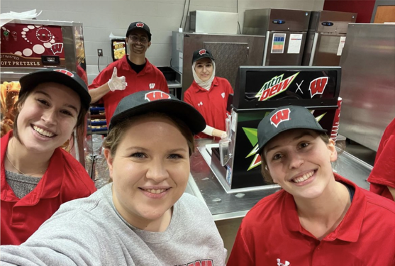

ONLINE EXCLUSIVE CONTENT
Wisconsin Engineer Sample Online Story
WRITTEN BY WEM AUTHOR
The secret lives of Wisconsin Engineer members
WRITTEN BY ALEXANDER KINER
Trailblazing: the many legacies of Wisconsin Engineer's first woman editor
WRITTEN BY MIKE SHAPIRO
READ OUR LATEST ISSUE
A More Connected Madison - WiHST's Vision for High-Speed Rail in the United States
Live in Madison, work in Chicago, and get dinner in Minneapolis - the possiblities of high-speed rail in the Midwest are endless.
WRITTEN BY CARMELLA WHITTAKER
A Peek at Recent Enrollment Trends in Engineering and the Humanities
Machines or mercurial philosophers; why students choose to study the former.
WRITTEN BY SHIVANI CHOUDHARY
A More Connected Madison - WiHST's Vision for High-Speed Rail in the United States
Live in Madison, work in Chicago, and get dinner in Minneapolis - the possiblities of high-speed rail in the Midwest are endless.
WRITTEN BY CARMELLA WHITTAKER
JOIN WEM TODAY!
At the Wisconsin Engineer Magazine, we're always open to new members - regardless of your experience or major! If you're interested in joining WEM, follow these three easy steps... 
1A
Attend our kickoff meeting
Our kickoff meeting for the Spring 2024 semester will be taking place on Wednesday, February 7, at 7:00 pm in Room 150 of 1410 Engineering Dr.
1B
Send us an email
If the kickoff meeting has already passed, send an email to the Editors-in-Chief at wiscengrmagazine@gmail.com.
2
Join a department
Our departments are Writing, Photography, Graphic Design, Public Relations, and Web. Remember, no previous experience is necessary to join!
3
Come to our meetings
You can view a full schedule of our meetings here. We have opportunities available across all of our departments - even if you join late in the semester, we would love to have you!